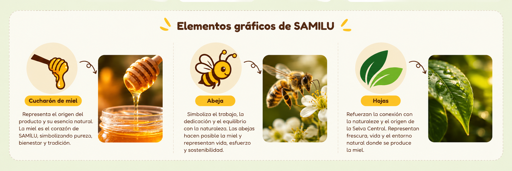
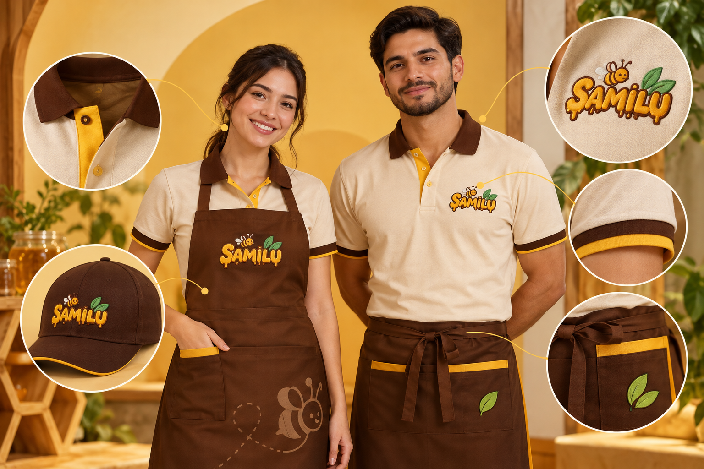
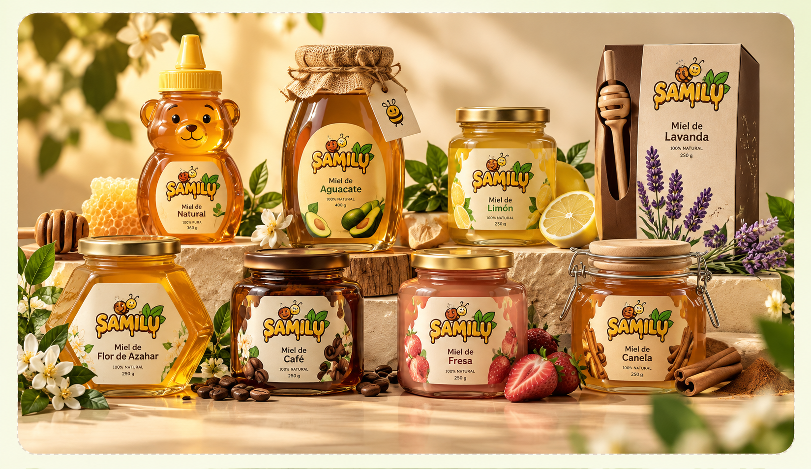
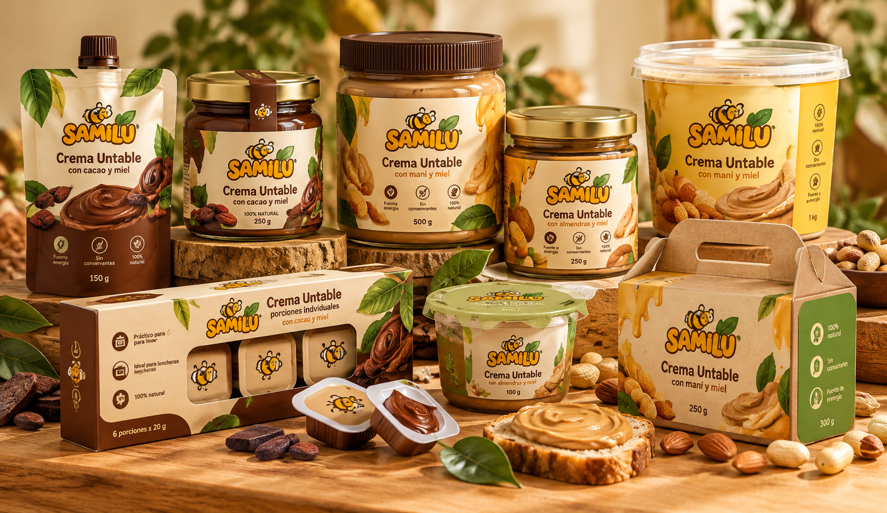
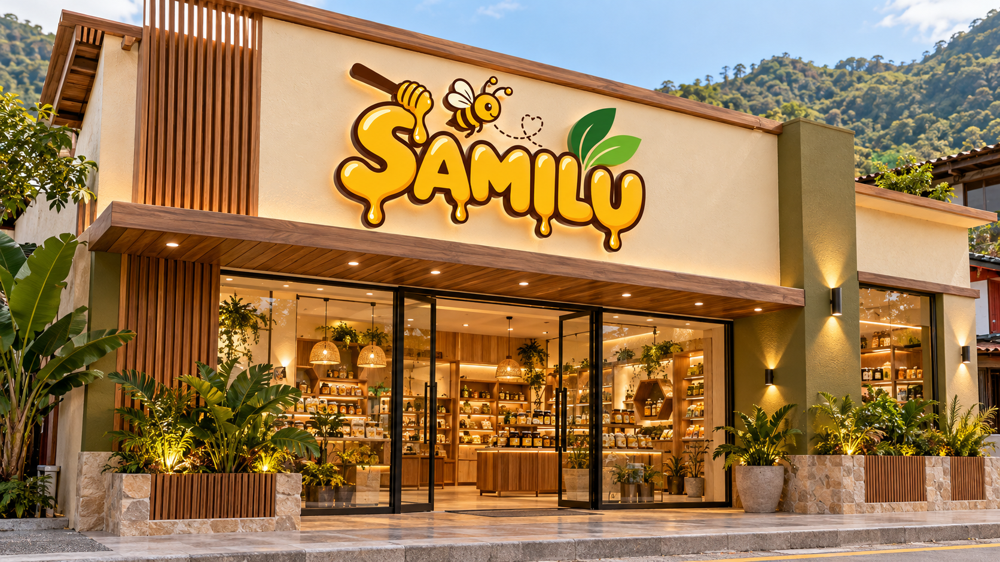
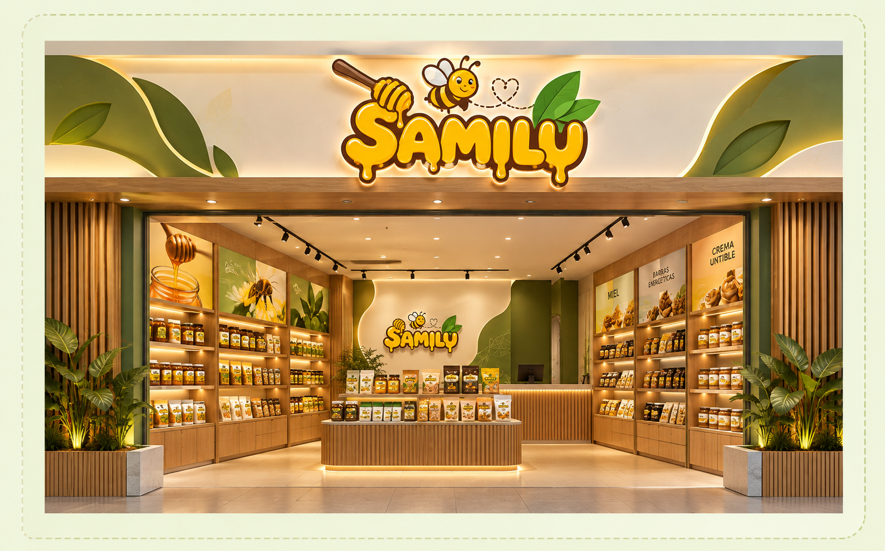

IDENTIDAD VISUAL · SAMILU
Una imagen que se reconoce
La identidad visual de SAMILU reúne el Imagotipo, los colores, la tipografía y los elementos gráficos que permiten reconocer la marca y relacionarla con la miel, la naturaleza y la Selva Central.
Miel
Naturaleza
Selva Central
Calidez
Modernidad
Imagotipo SAMILU
 Miel · Naturaleza · Región
Miel · Naturaleza · Región
Miel · Naturaleza · Región
01 · IDENTIFICADOR PRINCIPAL
El Imagotipo que representa SAMILU
El Imagotipo de SAMILU integra el nombre de la marca con diferentes elementos gráficos relacionados directamente con la actividad de la empresa.
PROCESO DE CREACIÓN DEL IMAGOTIPO
Bocetos y proceso de creación
Se desarrollaron cinco propuestas para encontrar una composición que representara los conceptos de miel, naturaleza, Selva Central, calidez, calidad, innovación, modernidad e identidad regional.

01
PROPUESTA 01
Recipiente tradicional y cucharón
Se integró un recipiente tradicional y un cucharón junto al nombre de la marca, representando el proceso artesanal de servir la miel. Busca transmitir una imagen fresca, natural y tradicional.

02
PROPUESTA 02
Composición minimalista
Se planteó una composición minimalista y geométrica con elementos simples y ordenados. Busca proyectar una imagen moderna, limpia y relacionada con la calidad del producto.

03
PROPUESTA 03
Naturaleza de la Selva Central
Se incorporó una tipografía sólida acompañada de elementos botánicos que representan la naturaleza de la Selva Central. Busca transmitir solidez, confianza y conexión con el entorno natural.

04
PROPUESTA 04
Línea curva y hojas
Se utilizaron una línea curva y hojas estilizadas para crear una composición dinámica y natural. Busca representar la vitalidad y variedad de los productos derivados de la miel.
PROPUESTA SELECCIONADA

05
PROPUESTA FINAL
Abeja, cucharón y gotas de miel
Se combinaron una abeja, un cucharón y gotas de miel con una tipografía redondeada. La propuesta transmite una identidad cálida, cercana, natural y amigable para la marca.
PROCESO
01 → 02 → 03 → 04 → 05 ✓
La quinta propuesta fue seleccionada como identidad final de SAMILU.
02 · PERSONALIDAD CROMÁTICA
Colores corporativos
La paleta cromática de SAMILU está construida a partir de cinco colores que representan la esencia visual de la marca y permiten mantener una identidad coherente.
Dorado
Representa la miel, la calidez y el
carácter principal de SAMILU.
HEX
#FAB902
RGB
250 · 180 · 2
CMYK
2 · 30 · 100 · 0
Marrón
Comunica confianza, calidad y conexión
con los elementos naturales.
HEX
#722E01
RGB
114 · 46 · 1
CMYK
37 · 80 · 100 · 52
Verde oscuro
Refuerza la naturaleza, el origen regional
y la identidad de la Selva Central.
HEX
#19681E
RGB
25 · 104 · 30
CMYK
89 · 35 · 100 · 31
Verde claro
Aporta frescura, naturaleza y una sensación
visual más luminosa.
HEX
#70B123
RGB
112 · 177 · 35
CMYK
64 · 7 · 100 · 0
Crema
Funciona como tono de apoyo para generar
espacios cálidos y limpios.
HEX
#FDF6D3
RGB
253 · 246 · 211
CMYK
1 · 1 · 20 · 0
Pasa el cursor sobre un color
HEX
—
RGB
—
CMYK
—
¿QUÉ COMUNICA LA PALETA?
Miel
Naturaleza
Confianza
Frescura
Origen regional
03 · SISTEMA TIPOGRÁFICO
Tipografía
La elección tipográfica busca que SAMILU se vea amigable, moderna, cercana y fácil de reconocer.
01
TIPOGRAFÍA DEL IMAGOTIPO
SAMILU
Copyduck
Fuente sans serif de formas redondeadas y expresivas, utilizada para el nombre principal de la marca.
02
TIPOGRAFÍA COMPLEMENTARIA
Sabor amazónico
Fredoka
Se utiliza como apoyo visual en contenidos digitales y textos de fácil lectura.
Jerarquía visual
El nombre SAMILU debe destacar mediante una
tipografía expresiva, mientras que la información
complementaria debe mantenerse clara y legible.
ANÁLISIS DEL IMAGOTIPO
Anatomía tipográfica del logo
El nombre SAMILU utiliza una tipografía de formas redondeadas y expresivas que refuerza la personalidad cercana, moderna y amigable de la marca.
＋
Anatomía tipográfica del logo
Configura las seis imágenes en el JavaScript.
1 / 6
01
Formas redondeadas
Las formas curvas aportan una apariencia amigable y cercana.
02
Ausencia de serifas
Su construcción sans serif mantiene una apariencia limpia y actual.
03
Proporción y volumen
El peso visual del nombre permite que SAMILU tenga presencia dentro del Imagotipo.
04
Personalidad visual
La expresión de las letras contribuye a comunicar modernidad, cercanía y creatividad.
04 · RECURSOS VISUALES
Elementos gráficos
Los elementos gráficos complementan el Imagotipo y ayudan a reforzar visualmente la relación de SAMILU con la miel y la naturaleza.
🐝
Abeja
Elemento asociado directamente con la producción de miel.
🌿
Hojas
Refuerzan naturaleza, frescura y origen de la Selva Central.
🍯
Miel
Permite reforzar el concepto principal de los productos de SAMILU.

05 · APLICACIÓN CORPORATIVA
Uniformes SAMILU
Los uniformes pueden utilizar principalmente los colores amarillo miel, verde y marrón, incorporando el Imagotipo en una zona visible.
Amarillo miel
Verde
Marrón
Imagotipo visible
Diseño sencillo

06 · PRODUCTO + MARCA
Empaques que comunican
Los frascos de miel, crema untable y empaques de barras energéticas deben incorporar el lImagotipo y los colores corporativos.



Presentación natural + moderna + atractiva

07 · IDENTIFICACIÓN FÍSICA
Letreros
Se propone utilizar un letrero principal con el Imagotipode SAMILU y sus colores corporativos. Puede complementarse con elementos gráficos relacionados con la miel, las hojas y la abeja.
01
Imagotipo visible
02
Colores corporativos
03
Elementos de miel y naturaleza
08 · EXPERIENCIA DE MARCA
Decoración con esencia
La decoración puede inspirarse en la naturaleza de la Selva Central utilizando amarillo miel, verde y marrón, junto con elementos gráficos de abejas, hojas y miel.

Naturaleza
Materiales y recursos visuales
relacionados con la Selva Central.
Paleta SAMILU
Amarillo miel, verde y marrón
como base visual.
Elementos gráficos
Abejas, hojas, miel y recursos
naturales.
Una marca que se reconoce.
El Imagotipo, los colores, la tipografía y sus diferentes aplicaciones deben mantener una imagen uniforme, natural, moderna y atractiva.